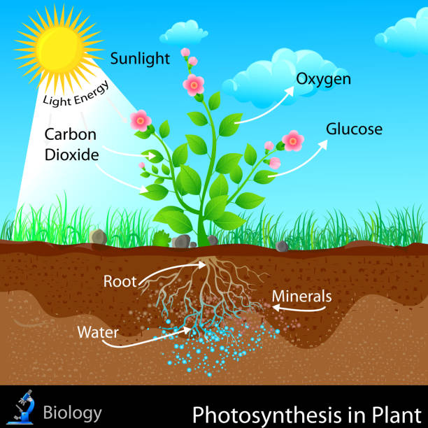
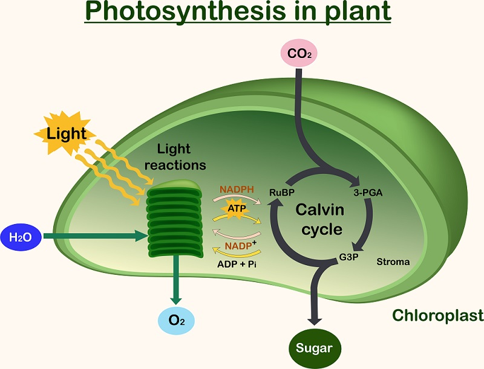
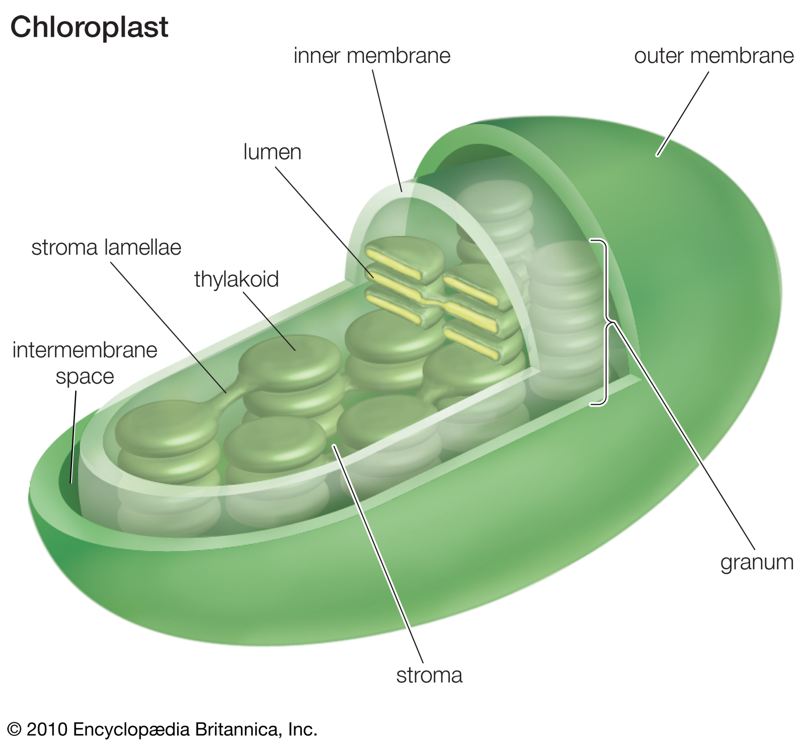

Photosynthesis
Photosynthesis is the process by which plants use sunlight, water, and carbon dioxide to create oxygen and energy in the form of sugar.

Most life on Earth depends on photosynthesis.The process is carried out by plants, algae, and some types of bacteria, which capture energy from sunlight to produce oxygen (O2) and chemical energy stored in glucose (a sugar).
The process
During photosynthesis, plants take in carbon dioxide (CO2) and water (H2O) from the air and soil. Within the plant cell, the water is oxidized, meaning it loses electrons, while the carbon dioxide is reduced, meaning it gains electrons. This transforms the water into oxygen and the carbon dioxide into glucose. The plant then releases the oxygen back into the air, and stores energy within the glucose molecules.

Chlorophyll
Inside the plant cell are small organelles called chloroplasts, which store the energy of sunlight. Within the thylakoid membranes of the chloroplast is a light-absorbing pigment called chlorophyll, which is responsible for giving the plant its green color. During photosynthesis, chlorophyll absorbs energy from blue- and red-light waves, and reflects green-light waves, making the plant appear green.
Light-dependent reactions vs. light-independent reactions
While there are many steps behind the process of photosynthesis, it can be broken down into two major stages: light-dependent reactions and light-independent reactions. The light-dependent reaction takes place within the thylakoid membrane and requires a steady stream of sunlight, hence the name light-dependent reaction. The chlorophyll absorbs energy from the light waves, which is converted into chemical energy in the form of the molecules ATP(adenosine triphosphate) and NADPH(nicotinamide adenine dinucleotide phosphate). The light-independent stage, also known as the Calvin Cycle, takes place in the stroma, the space between the thylakoid membranes and the chloroplast membranes, and does not require light, hence the name light-independent reaction. During this stage, energy from the ATP and NADPH molecules is used to assemble carbohydrate molecules, like glucose, from carbon dioxide.

C3 and C4 photosynthesis
Not all forms of photosynthesis are created equal, however. There are different types of photosynthesis, including C3 photosynthesis and C4 photosynthesis. C3 photosynthesis is used by the majority of plants. It involves producing a three-carbon compound called 3-phosphoglyceric acid during the Calvin Cycle, which goes on to become glucose. C4 photosynthesis, on the other hand, produces a four-carbon intermediate compound, which splits into carbon dioxide and a three-carbon compound during the Calvin Cycle. A benefit of C4 photosynthesis is that by producing higher levels of carbon, it allows plants to thrive in environments without much light or water.
Acknowledgements
Contact